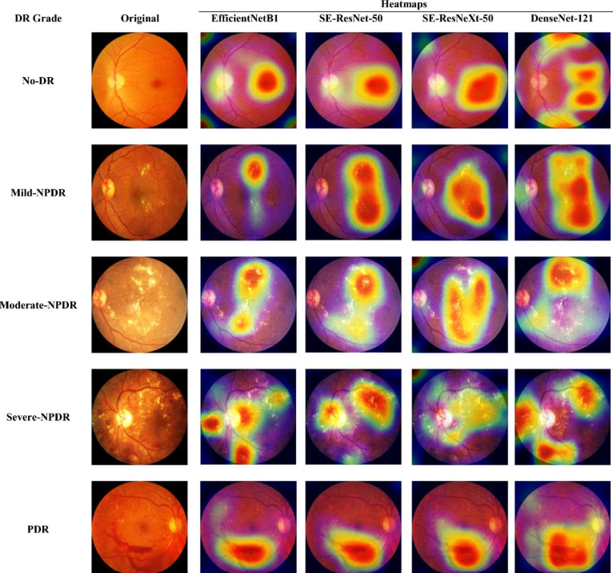
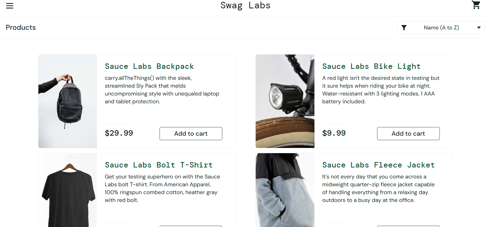
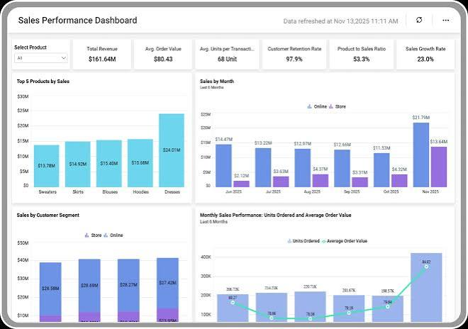

QA & Automation
Manual testing, test cases, Cypress
COMPUTER SCIENCE ENGINEERING · AI & ML
I'm a Computer Science Engineering student specializing in AI & ML, interested in software quality, test automation, and machine learning.
Manual testing, test cases, Cypress
Python, deep learning, data analysis
A LITTLE ABOUT ME
I'm a Computer Science Engineering graduate specializing in Artificial Intelligence and Machine Learning. My software testing internship helped me gain practical experience in validating web and mobile applications, writing test cases, identifying defects, and collaborating with development teams. I also enjoy building machine learning projects and exploring data-driven solutions.
WHAT I WORK WITH
MY JOURNEY
JAN 2026 – JUN 2026
KO Innovation · Kofleetz
SELECTED WORK
A combination of software quality assurance, automation, and applied machine learning.
01 / DEEP LEARNING
A deep learning project exploring retinal image classification using ResNet and EfficientNet.
View on GitHub ↗
02 / QA AUTOMATION
Automated browser tests covering login, product selection, and shopping workflows, with assertions to validate application behavior.
View on GitHub ↗
03 / DATA ANALYSIS
Analyzed sales data using Python and created visualizations in Power BI to explore patterns, trends, and business insights.
View on GitHub ↗
LET'S CONNECT
I'm interested in opportunities in software testing, QA automation, AI/ML, and data science.
Email Me ↗